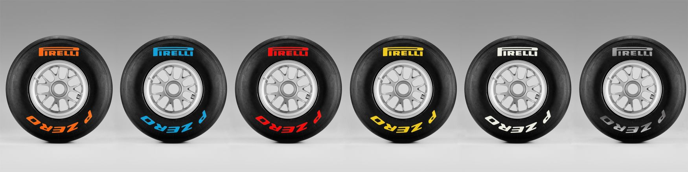

While watching an F1 there are many terms and phrases being said that someone who is brand new to
watching racing might not understand. Something that is talked about alot is DRS. DRS is the drag
reduction system that is on the formula 1 cars. This system does exactly what it sounds like, it
reduces the drag on the car by lifting the spoiler up so that there is less downforce which allows
the car to go slightly faster. This system is only allowed to activate in certain sections of the
track that are called drs zones. While in these zones if a driver is less than a second away from
the car in front of them, they are allowed to activate their drs in order to assist them in passing
Another thing that is commonly talked about is the different types of tires and the tire degradation
throughout the race. While racing, the tires of an F1 car are put under a lot of stress and start to
wear out after some time. The exact number of laps that tires wear out varies from track to track and
on other factors such as weather. The longer that an F1 car is using one set of tires, the less grip
it has and the car will become slower and harder to control. There are 5 different types of tires in
F1, softs, mediums, hards, intermediates, and wets. Softs, mediums, and hards are considered dry tires.
These are used when the track isn't wet. The difference between these tires is that softs provide the
most grip and therefore make it the fastest tire to be used, but they wear out quickly meaning that the
team will most likely have to make a pit stop sooner than if they were using other tires. Hard tires
are the slowest of the three dry tires but they wear out the slowest. Medium tires are a halfway point
between the two. If it isn't raining during the race, each team is required to use at least 2 different
types of tires at some point during the race. If it is raining though, teams are not required to use two
different types of tires and they will switch to the rain tires. The rain tires are the intermediate and
the wet. The intermediate tires are better if the track is only slightly wet but, if the track is very
wet then the wets will be better suited at giving the car traction to go faster in those conditions.
